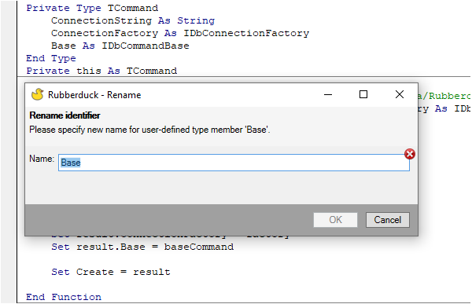
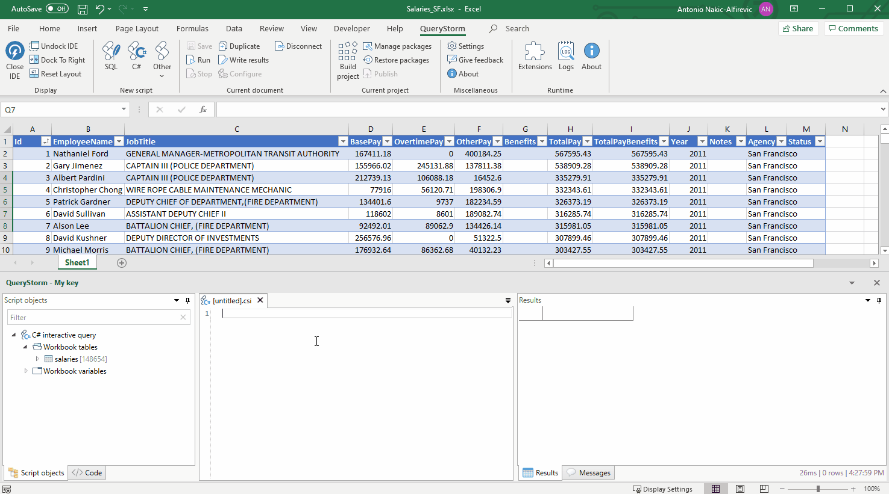

Overview of Excel Development tools
When working with Excel at some point it becomes easier to do you work with additional tools. While most of the work that is done within excel can be done within a plethora of other application and programming languages it is actively used. Within Europe it has a market share of over 90% in the corporate and governmental environment. No wonder there are some many tools created around microsoft's Excel application. In this article I'll summarize all the tools around Excel for developers and users that involve some kind of programming. And I'll try to group them within distinct categories.
I'll start listing the technologies as close to Excel as possible and expand outwards.
Microsoft Excel
Don't use additional tools 😉
Perhaps not the first item you would expect but I list this option here as I have fallen into the trap of thinking "Using technology x we can solve this problem easily" and similar thoughts along those lines. When working in a team, make sure the additional learning your colleagues have to do and investment have to make to learn the new tool along with your solution that's created within it. When using it for a one time project or your team agrees upon using other solutions a choice can be made of the technologies listed below. Otherwise you can learn about more advanced built-in functionality like turning tables or look for an existing formula like the new Lambda function that perhaps already does what you do.
VBA - VisualBasic for Applications
Perhaps you are familiar with the term Macro or VBA. VBA is a programming language that is provided within Excel. It can be used to automate nearly every interaction. Because it is delivered with Excel it does not require any setup or installation not for developers or for user. of a workbook book with VBA code in it. Microsoft calls this a Macro enabled workbook. Excel files have the distinct .xlsm (m for macro) instead of the .xlsx extension. Within some strongly regulated corporate environments this VBA usage does not require a ticket through IT. Making it the first step towards automation. See the VBA reference for more information.
Extending the VBA Editor
While VBA is still supported it's editor is dated from when VisualBasic 6 was released (from 1998)1. That's where Rubberduck and MZ-Tools aim to support the developers with add-in. Because it is a tool only meant for developers and not attached to the workbook itself (but the code is) it means when you share the document to users. The underlying VBA code works and no additional configuration is needed. This is a huge benefit in my opinion.
Rubberduck
I have used Rubberduck extensively. Because of its many features like its Code Explorer making it easy to navigate through your classes and functions and the refactoring tool so you can easily rename your variables or functions. Rubberduck is an open-source project.

MZ-Tools
Within the similar domain is the add-in MZ-tools. It provides also a sort of code explorer plus many more. MZ-Tools requires a paid license.
Microsoft Provided Platforms
Besides VBA Microsoft provides some additional platforms as can be seen in this graph on the Office Scripts Page.

Office Scripts
Office Scripts are not something for the regular home user as it requires a business license. By using JavaScript or TypeScript you can make scripts similar to VBA. One big benefit is to be able to create workflows using PowerAutomate. A example is a workflow where a excel is routinely updated and sends a mail. Without needing user interaction. Another benefit is that because of the underlying JavaScript language and the way it is implemented the scripts are usable from the webversions as well.
COM-Addins
Where Rubberduck and MZ-Tools are COM Add-ins (now developed using the VSTO - Visual Studio Tools for Office). You could create one yourself by using the .NET framework. A frequent used language is the .Net framework is C#. Learn how to create one here. As shown in the graph above, this is mainly meant for developers. In this case a VisualStudio License is needed in order to build the add-in, so a installer can be made to distribute it to the users. Desktop use only.
Web add-ins
Last one of the quadrant is the Web add-ins. It uses webtechnologies like HTML, CSS and Javascript. Microsoft depicts is as a embedded website within your office application. This Webapplication can then interact with the office application. One of the benefits is that is can run on mobile devices and in the case of a multiple end users provides options for a centralized deployment.

Expanding outwards
In the options summarized above we looked at only at the platforms provided by Microsoft itself or enhances the interactions within those platforms. Let's look a little bit further and list the possibilities to automate tasks using different platforms.
Programming Language specific tools and extensions
The selection for this paragraph is based on the idea that the user or the developer still opens en uses Excel to interact with the workbook. Otherwise I could list many more programming languages and platforms because interacting with Excel files is not the same as working with Excel as an application.
Python
xlwings
Even with all the tools to make VBA easier some basic programming features may still lack for example easy version control. One way I have dealt with this is the use of xlwings package. Create python functions as you would regularly do in a separate python file and call those functions from within Excel. This benefits me with - version control - freedom of editor as I can choose whatever editor supports python - extensive use of libraries - Python has a vast ecosystem of packages with data-analysis, plotting, interactive use and machine learning
When deploying the package for users, a add-in can be generated for a fee a 1-click installer can be provided as well.
Even when developing within VBA I found myself using the xlwings package creating unittests (although Rubberduck provides a feature to execute unittests within VBA itself). Small example can be found on the xlwings blog
Open source and paid license for additional features.
.Net using languages
.Net is a framework maintained by Microsoft and mainly used for Microsoft`s specific platforms and apps. For this platform there is a package manager called NuGet. Which enables the developer to reuse code created by others within your apps. The following add-ins Query storm and SharpCells can make use of these packages.
C
Query Storm is a add-in that lets you write C# code within Excel. Provides it's own runtime for easier installation for end users. 
F
Sharp cells is a add-in that lets you write F# code within Excel. Also possible to use .Net libraries and call dll from the excel workbook. As a prerequisite it depends on the .Net SDK which could make it a little bit more difficult to use for non developing users compared to C#.
Other non-excel spreadsheet solutions with a programming possibility
This article was about Excel in specific, however there are some non Excel platforms that seems interesting.
Google Sheets
The spreadsheet program from Google offers the possibility to create custom functions or connect to other Google services. Extending Google Sheet documentation
Neptyne
A cloud based, python powered app development platform using a spreadsheet interface. Neptyne